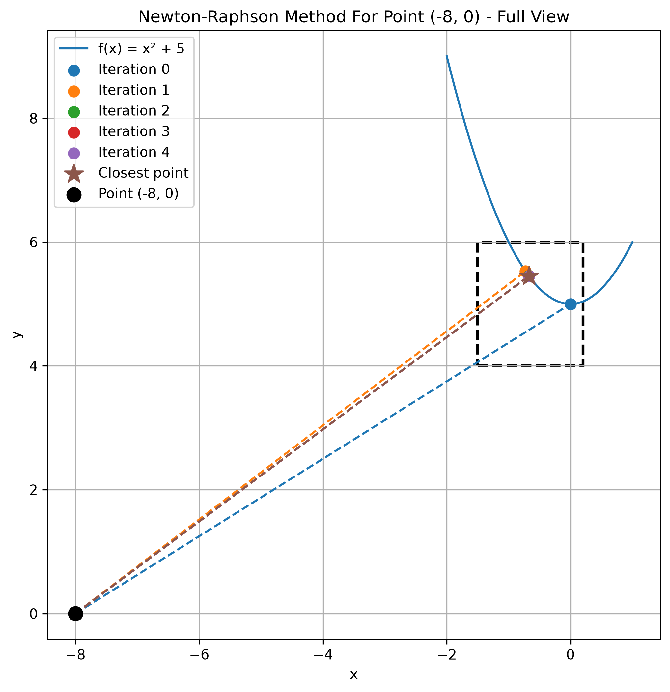
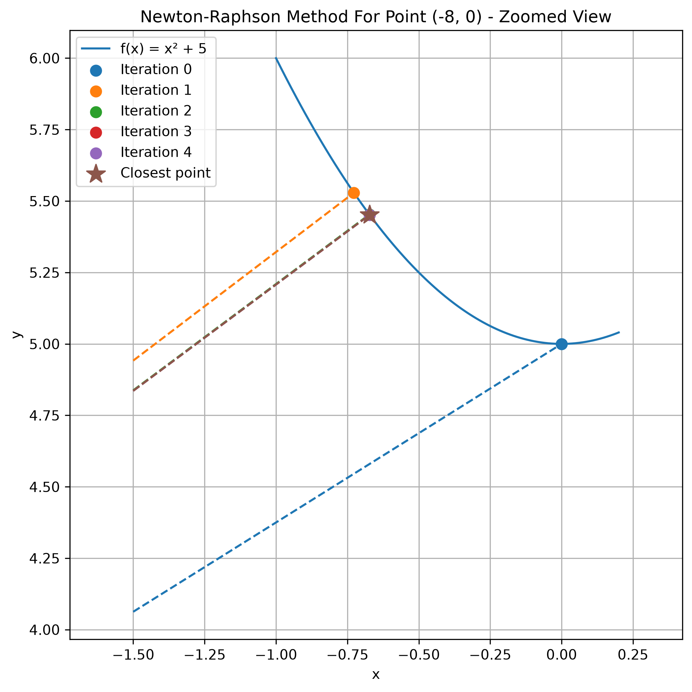
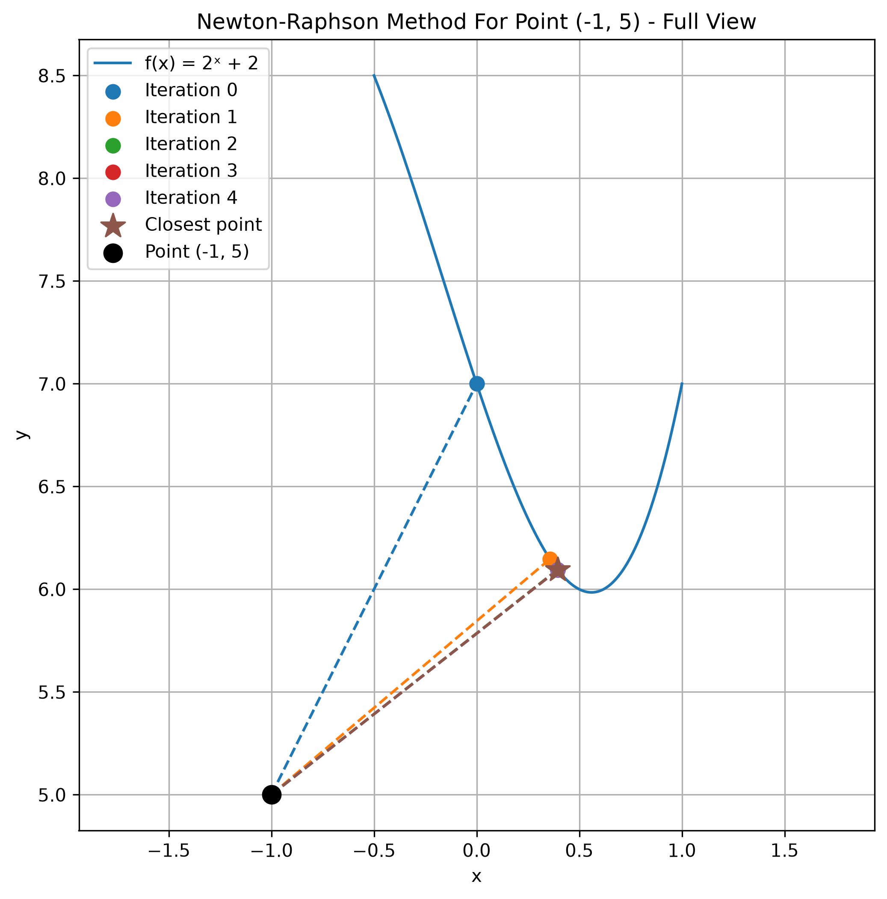
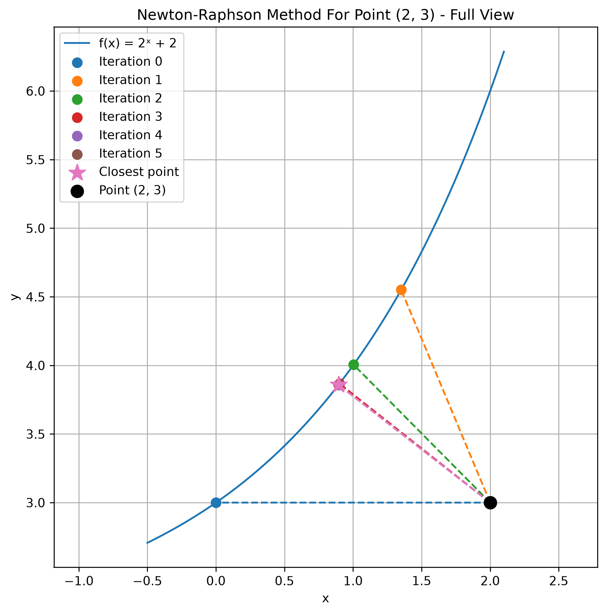

SYDE 572 - Assignment 1
Part 1: Find shortest distance from a point to a function
Analytical Approach
Given the function \(f(x) = x^2 + 5\) and the points \((0,0), (-4,0), (-8,0), (2,0), (6,0)\), we want to find the shortest distance from each point to the function.
We measure the distance using the Euclidean distance formula:
\[ d = \sqrt{(x - x_0)^2 + (f(x) - y_0)^2} \]
To simplify the calculations, we can minimize the squared distance instead of the actual distance. Both reach their minimum at the same point, so we can avoid working with the square root.
\[ D(x) = (x - x_0)^2 + (f(x) - y_0)^2 \]
To find the closest point, we take the derivative of the squared distance and set it to zero. This allows us to find where the distance is minimized.
Using \(f(x) = x^2 + 5\) and \(f'(x) = 2x\), we get:
\[ \begin{aligned} D'(x) &= 2(x-x_0) + 2(x^2+5 - y_0)(2x) \\ &= 4x^3 + 22x - 4xy_0 - 2x_0\end{aligned} \]
By hand: Point \((0,0)\)
Setting \(D'(x) = 0\) and substituting \((0, 0)\) gives:
\[ 0 = 4x^3 + 22x \]
Solving this equation gives \(x = 0\), and therefore \(f(0) = 5\).
Using the closest point \((0,5)\) and the given point \((0,0)\), the distance is:
\[ d = \sqrt{(0-0)^2 + (5-0)^2} = 5 \]
By hand: Point \((-4,0)\)
Setting \(D'(x) = 0\) and substituting \((-4, 0)\) gives:
\[ 0 = 4x^3 + 22x + 8 \]
Solving this equation gives \(x \approx -0.3555\), and therefore \(f(-0.3555) \approx 5.1264\).
Using the closest point \((-0.3555, 5.1264)\) and the given point \((-4,0)\), the distance is:
\[ d = \sqrt{(-0.3555+4)^2 + (5.1264-0)^2} \approx 6.2898 \]
We can repeat this process for the other points and obtain the following results:
| Point | Closest x | Closest Point | Distance |
|---|---|---|---|
| (0, 0) | 0.0000 | (0.0000, 5.0000) | 5.0000 |
| (-4, 0) | -0.3555 | (-0.3555, 5.1264) | 6.2898 |
| (-8, 0) | -0.6721 | (-0.6721, 5.4517) | 9.1334 |
| (2, 0) | 0.1807 | (0.1807, 5.0327) | 5.3514 |
| (6, 0) | 0.5199 | (0.5199, 5.2703) | 7.6031 |
Newton-Raphson Method
We use the Newton-Raphson method when we can easily calculate the first and second derivatives of \(f(x)\). We also need an initial guess for \(x\) and a tolerance level to determine when to stop iterating.
Recall that the squared distance function is:
\[ D(x) = (x - x_0)^2 + (f(x) - y_0)^2 \]
Given \(f(x) = x^2 + 5\), \(f'(x) = 2x\), and \(f''(x) = 2\), the derivatives of \(D(x)\) are:
\[ \begin{aligned} D'(x) &= 4x^3 + 22x - 4xy_0 - 2x_0 \\ D''(x) &= 12x^2 + 22 - 4y_0 \end{aligned} \]
We update \(x\) using the Newton-Raphson formula:
\[ x_{n+1} = x_n - \frac{D'(x_n)}{D''(x_n)} \]
We start with the initial guess \(x_0 = 0.0\) and continue iterating until the change between two consecutive estimates is smaller than the tolerance \(1 \times 10^{-7}\):
\[ |x_{n+1} - x_n| < 10^{-7} \]
By hand: Point \((0, 0)\)
| Iteration | \(x\) | \(D'(x)\) | \(D''(x)\) | Next \(x\) |
|---|---|---|---|---|
| 0 | 0.0000000 | 0.0000000 | 22.0000000 | 0.000000 |
The method converges to \(x = 0\), giving the closest point \((0, f(0)) = (0, 5)\).
The shortest distance between the given point \((0, 0)\) and the closest point \((0, 5)\) is:
\[ d = \sqrt{(0-0)^2 + (5-0)^2} = 5 \]
By hand: Point \((-4, 0)\)
| Iteration | \(x\) | \(D'(x)\) | \(D''(x)\) | Next \(x\) |
|---|---|---|---|---|
| 0 | 0.0000000 | 8.0000000 | 22.0000000 | -0.3636364 |
| 1 | -0.3636364 | -0.1923370 | 23.5867770 | -0.3554820 |
| 2 | -0.3554820 | -0.0002880 | 23.5164090 | -0.3554698 |
| 3 | -0.3554698 | 0.0000000 | 23.5163040 | -0.3554698 |
The method converges to \(x \approx -0.3555\), giving the closest point \((-0.3555, f(-0.3555)) \approx (-0.3555, 5.1264)\).
The shortest distance between the given point \((-4, 0)\) and the closest point is approximately:
\[ d = \sqrt{(-0.3555 + 4)^2 + (5.1264 - 0)^2} \approx 6.2898 \]
We can repeat this process for the other points and obtain the following results:
| Point | Closest x | Closest Point | Distance |
|---|---|---|---|
| (0, 0) | 0.0000 | (0.0000, 5.0000) | 5.0000 |
| (-4, 0) | -0.3555 | (-0.3555, 5.1264) | 6.2898 |
| (-8, 0) | -0.6721 | (-0.6721, 5.4517) | 9.1334 |
| (2, 0) | 0.1807 | (0.1807, 5.0327) | 5.3514 |
| (6, 0) | 0.5199 | (0.5199, 5.2703) | 7.6031 |
Newton-Raphson Method - code
We implemented the Newton-Raphson method in Python using the code from our Jupyter Notebook, which can be viewed here. The only difference is that we added an array to store the values from each iteration.
Example: Point \((-8, 0)\)
Using the Newton-Raphson method, we obtained the following iterations:
| Iteration | \(x\) |
|---|---|
| 0 | 0.0000000 |
| 1 | -0.7272727 |
| 2 | -0.6729923 |
| 3 | -0.6720784 |
| 4 | -0.6720781 |
| 5 | -0.6720781 |
Notice that the method converges to \(x \approx -0.6721\), with \(f(-0.6721) \approx 5.4517\).
Therefore, the closest point on the curve is approximately \((-0.6721, 5.4517)\), and the shortest distance from \((-8,0)\) to the curve is approximately \(9.1334\).


Explore other polynomial functions
Using the Newton-Raphson method, we applied it to other polynomial functions, such as cubic functions.
Given the polynomial \(f(x) = 2x^3 + x^2 - 3x +7\), \(f'(x) = 6x^2 + 2x - 3\), and \(f''(x) = 12x + 2\), and the point \((-1, 5)\), we get the following iterations:
| Iteration | \(x\) |
|---|---|
| 0 | 0.0000000 |
| 1 | 0.3571429 |
| 2 | 0.3939311 |
| 3 | 0.3948949 |
| 4 | 0.3948955 |
| 5 | 0.3948955 |
Notice that the method converges to \(x \approx 0.3949\), with \(f(0.3949) \approx 6.0944\).
Therefore, the closest point on the curve is approximately \((0.3949, 6.0944)\), and the shortest distance from \((-1,5)\) to the curve is approximately \(1.7730\).

Explore non-polynomial functions
Using the Newton-Raphson method, we applied it to non-polynomial functions, such as exponential functions.
Given \(f(x) = 2^x + 2\), \(f'(x) = 2^x \ln(2)\), and \(f''(x) = 2^x(\ln(2))^2\), and the point \((2,3)\), we can apply the Newton-Raphson method and get the following iterations:
| Iteration | \(x\) |
|---|---|
| 0 | 0.0000000 |
| 1 | 1.3509378 |
| 2 | 1.0036735 |
| 3 | 0.9009555 |
| 4 | 0.8941453 |
| 5 | 0.8941181 |
| 6 | 0.8941181 |
Notice that the method converges to \(x \approx 0.8941\), with \(f(0.8941) \approx 3.8585\).
Therefore, the closest point on the curve is approximately \((0.8941, 3.8585)\), and the shortest distance from \((2,3)\) to the curve is approximately \(1.4000\).

Summary of Results
The Newton-Raphson method successfully converged for the given polynomial function, a higher-order polynomial function, and a non-polynomial function, demonstrating that the method can be applied to different types of functions.
Golden Section Search
Golden Section Search
We use the Golden Section Search method when we don't know the derivatives of \(f(x)\) or when they are difficult to calculate. Instead, we use a specific interval that contains the minimum. We also use a tolerance to determine when to stop iterating.
Given the function \(f(x) = x^2 + 5\), we want to find the minimum of the squared distance function \(D(x)\).
We start with an initial interval \([a,b]\) and keep iterating until the length of the interval is smaller than the tolerance \(1 \times 10^{-7}\).
By hand: Point \((0, 0)\)
Additional Functions
The numerical methods were also tested on non-polynomial functions, including exponential, logarithmic, and radical functions.
Part Two: Fitting to an Equation
Given Data
The following points are used to fit a line and a parabola:
(0, 0.5), (2, 3.5), (1, 1.5), (3, 7.5)
Line Fit
We fit a line of the form y = c0 + c1x by minimizing the mean squared error.
Parabola Fit
We fit a parabola of the form y = c0 + c1x + c2x2 by minimizing the mean squared error.